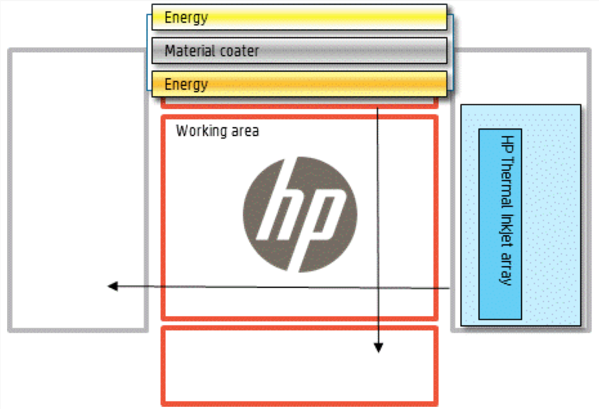

HP's 3D printer: the Untold Story
If you’ve mentioned the words Hewlett Packard and 3D printing to me in the last couple months, you likely prompted a mini-rant where I proclaimed that HP was developing a High Speed Sintering printer. When pressed on why, I pointed to unconfirmed rumors of a licensing deal from University of Loughborough1 and Meg Whitman’s telling quote to CNBC that HP’s 3D printing effort “has a lot of shared technology with actually our toner business.”
Now that the announcement has been made–with sufficient technical detail to confirm that Multi Jet FusionTM uses the same methods as High Speed Sintering—I’d like to tell the story missing from the current media narrative before diving into the technology
HP technology Powers the “Three Dimensional Printer”
In the late 1980s and early 1990s, a number of independent inventors came up with various methods for additively creating parts given a CAD model. Although the earliest efforts used exotic techniques with lasers or extruders, a group of researchers out of MIT cleverly utilized existing hardware from inkjet printing. Using a binder specially designed to flow through an HP inkjet head, the researchers demonstrated a device that could create parts by alternating layers of plaster and binder. Thus, Z Corporation was born, and in 1992 a trademark was filed for THREE DIMENSIONAL PRINTING. The technology really was standard inkjet printing with an extra Z dimension thrown in; hence the phrase 3D printing. A couple years later, HP inkjet heads were powering the earliest commercial 3D printers.2
2006: Genesis of the 3D printing Hype Cycle
The RepRap project’s v1.0 Darwin created the desktop 3D printing market: this single machine spawned the first kits from BitsFromBytes and Makerbot3 as well as virtually all desktop printers on the market4. Ironically, while the Replicating Rapid Prototypers project largely failed in its vision of people 3D printing specialized parts so that others could build their own RepRaps with off-the-shelf parts, the project was wildly successful in spawning new machines and new companies.5 A greater than 300% compound annual growth rate followed for the next several years. Suddenly, thousands of people were buying a new type of printer using Fused Filament Fabrication, better known by the Stratasys trademark, Fused Deposition Modeling (FDM).
The Ill-Fated Experiment
 For only €13,000, you can own one too!
For only €13,000, you can own one too!
The market seemed ripe for a killer product to go mainstream. So Stratasys and HP teamed up to launch HP’s Designjet 3D series.
“There are millions of 3D designers using 2D printers who are ready to bring their designs to life in 3D,” says Santiago Morera, HP’s vice president and general manager of its Large Format Printing Business. “Stratasys FDM technology is the ideal platform for HP to enter the 3D MCAD printing market and begin to capitalize on this untapped opportunity.”
-Press Release on Jan 19, 2010
The product only launched in five markets: France, Germany, Italy, Spain and the UK. At €13,000, the price exceeded even the least expensive Stratasys printer and dwarfed the popular Makerbot kits selling for $1000. A product with no competitive advantage sold at a high price to legacy printing business customers. 16 months later, the partnership ended as abruptly as it started.
Yet the sleeping giant began to stir. Mounting shareholder pressure forced HP to seriously consider releasing their own 3D printer. Suddenly, the highest levels of leadership were assuring investors that R&D was looking at 3D printing and that an announcement would be forthcoming.
Analyzing HP’s Multi Jet Fusion
In a single word: breakthrough. The first commercially available high speed sintering printer on the market. Let’s take a closer look at MJF (all 3D printing technologies have to have a TLA6).
SLS is to vector printing as MJF is to raster printing. Both technologies start by depositing a fine layer of powder and selectively melts each layer to the previous layer. With SLS, a laser modulated by mirrors sinters the powder, and requires a sealed and heated build chamber. With MJF, a Thermal Inkjet array deposits a liquid thermoplastic onto the powder bed, which is subsequently solidified by an energy source. 
Curiously, the roller has an energy source on both sides. Presumably, only the leading energy source will be active, and the second energy source is so the arm is bi-directional. Likewise, the inkjet array is likely bi-directional as well. Although the energy source is not specified, my guess is an infrared lamp. If you’ve watched SLS in action before, you can imagine how this design is 10x faster!
The jetted liquid fills the voids between particles, creating a denser part than SLS. Depending on the viscosity of the liquid and the time difference between deposition & radiation, the distance the thermal ink travels may vary. Insufficient time or too much viscosity may result in insufficient penetration to layers underneath and thus lower ductility. If the inkjet arm moves at a consistent rate despite per-layer complexity, the center of the build platform will have a consistent amount of time between deposition & radiation, while the edges will have the most extreme variations in time, with a voxel in the corner alternating between diff_tmin on even layers and diff_tmax on odd layers. Until we have the machine, this is a purely speculative effect.
HP also claims that more powder can be recycled as a result of lower thermal stress. Hurray! Although, note that HP will probably be selling the ink and not the powder, so you can guess the relative price points. We will also need to see how the detailing agent will affect recycling. This claim may suggest that the build chamber is unheated. Waiting for build chambers to cool is a major component of build time with SLS. It’s too early to tell, but a potential downside of this may be increased part warping. Naturally, the parts that are being shown off are from prototype printers and warping is not a unique problem to this process.
HP also presents a compelling roadmap for the technology. True full-color printing with functional parts. Variable material properties. It’s like ZCorp + Objet + SLS all in one! Kidding aside, it’s a seriously compelling vision and I’m a believer. 10x better could prove to an understatement when functional increases are weighed in with the speed increases.
So what’s the catch?
Availability of the end-to-end HP 3D printing system is planned in 2016,(4) as the product and HP partners’ solutions meet the requirements and quality standards that HP customers expect.
- Availability is subject to change.
HP gave us a rare glimse into the future of 3D printing. Just like the Xerox Star did for computing… Here’s to hoping that HP Inc gives the new 3D printing division the requisite autonomy to go to market before the winds of change start blowing.
I have yet to confirm if HP licensed the IP or worked around it
Today, “3D printing” is an umbrella term referring to a multitude of technologies, including SLA, SLS, FDM, etc. By this colloquial usage, the Z Corp printers were not the earliest, but I’ll stick with the time-period terminology
I had one of the earliest kits sold by BitsFromBytes. The kit suffered from a number of problems, which likely contributed to Makerbot’s eclipse despite launching several months later. Both companies used off-the-shelf components where possible and laser cutting for specialized parts.
See the RepRap Family Tree.
While much of this progress was initially concentrated in hackerspaces and resulted in advances like deltabots, printing field’s metal, new materials etc., a new wave of commercial spinouts have come in the last two years. Many are entrepreneurs following a manifest destiny mindset with gold in their eyes yet no tools in their hands. I’ve started calling these often kickstarted companies as RipRaps: Ripped off design, cRappy prints, and would encourage you to do the same!
Three Letter Acronym
← Back to Writing